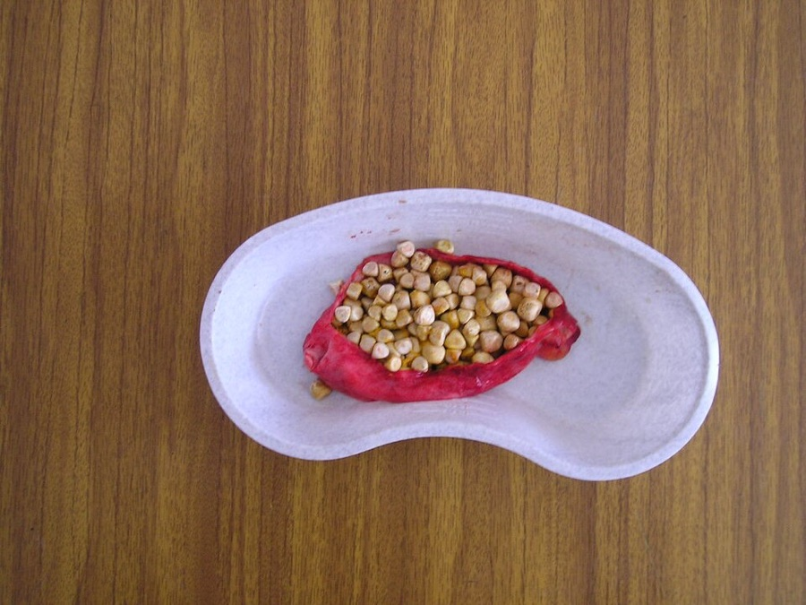
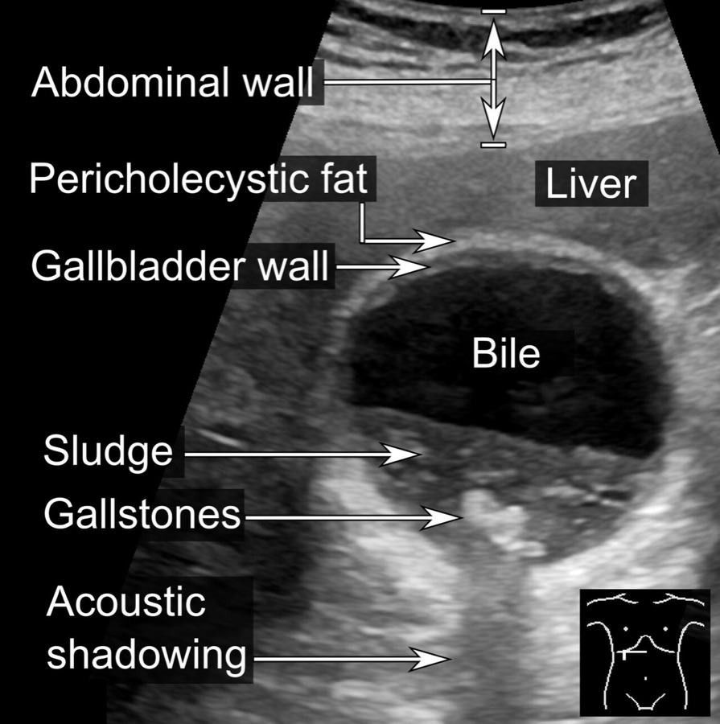
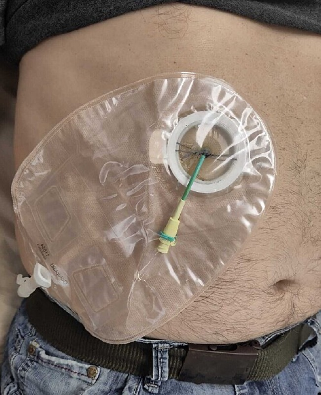
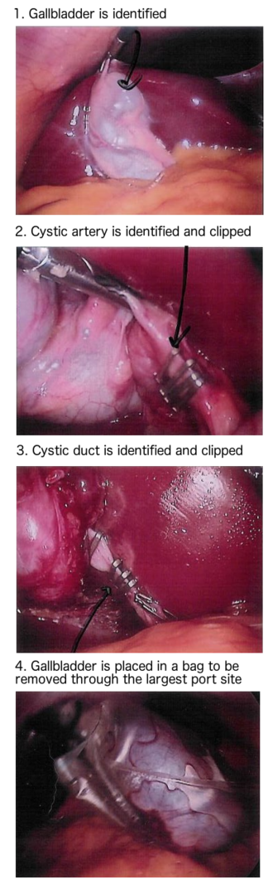
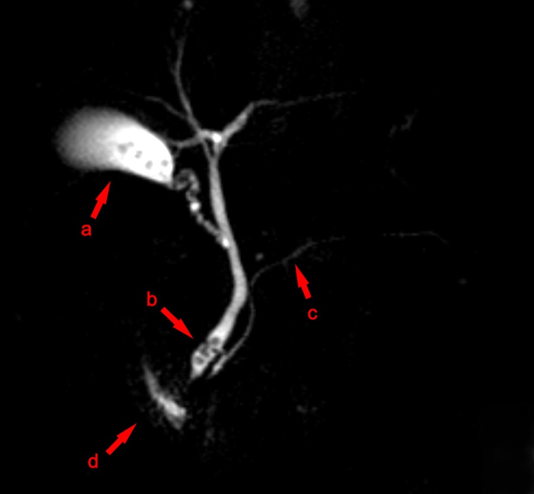

דיון מקרים: מחלות כיס המרה
שלושה מטופלים בדויים: כאב בילארי, דלקת חריפה של כיס המרה ואבן בצינור המרה המשותף. מהאבחנה ועד חדר הניתוח
בסוף המפגש תדעו
- להבדיל בין אבנים שקטות, כאב בילארי ודלקת חריפה של כיס המרה לפי הסיפור, הבדיקה והאולטרסאונד
- לבצע ולפרש את סימן מרפי ולבחור את בדיקות המעבדה וההדמיה הנכונות
- להתאים את הטיפול בדלקת חריפה לחומרה ולמצב המטופל: ניתוח מוקדם, "קירור" או נקז מלעורי
- להעריך את הסיכון לאבן בצינור המשותף ולבחור בין צילום דרכי מרה בניתוח, MRCP, ERCP וחקירת הצינור
- להסביר את "המבט הקריטי לבטיחות" ואת הדרכים לצאת מניתוח קשה בלי לפגוע בצינור המרה
מה רואים בשדה הניתוח

👆 לחצו על אזור בציור כדי לקרוא עליו
באורך 7–10 ס״מ, מחזיק 30–60 מ״ל מרה. קרקעית, גוף, צוואר ואינפונדיבולום עם כיס הרטמן. צמוד לכבד בסגמנטים IVB ו-V. בצד של הכבד אין צפק אלא "לוח ציסטי"
אורכו 1–5 ס״מ. נכנס לצינור המשותף בזווית חדה, עם שונות רבה בנקודת הכניסה. כשמושכים את קרקעית כיס המרה למעלה בלבד, הוא רץ מקביל לצינור הכבדי המשותף. זה המנגנון הקלאסי לפגיעה בצינור
הצינור הכבדי המשותף נמצא מעל כניסת הצינור הציסטי. הצינור המשותף מתחתיה. אספקת הדם רק עורקית, משני כלים לאורכו (בשעה 3 ובשעה 9). ניתוח צמוד מדי לצינור פוגע בהם ומוביל להיצרות איסכמית
העורק הימני של הכבד עובר בדרך כלל מאחורי הצינור הכבדי ונכנס למשולש של קאלו. משם יוצא העורק הציסטי. בכ-20% יש עורק כבד ימני נוסף או חלופי. שונות בדרכי המרה ובכלי הדם: עד 30% מהאנשים
הצינור המשותף עובר מאחורי החלק הראשון של התריסריון. דרכו נכנס האנדוסקופ ב-ERCP אל הפפילה
החלק הרחוק של הצינור המשותף עובר בתוך ראש הלבלב ומצטרף לצינור הלבלב באמפולה. לכן אבן שעוברת דרך האמפולה יכולה לגרום לדלקת לבלב
כיס המרה, דרכי המרה, כלי הדם, התריסריון והלבלב · Sobotta, Atlas and Text-book of Human Anatomy (1906), איור 393 (נחלת הכלל)
מאבן שקטה ועד סיבוך

"זה קורה לי אחרי ארוחת ערב"
- מה האבחנה המשוערת ומה מבדיל אותה מדלקת חריפה?
- איזו בדיקה אחת מאשרת אותה?
- להמליץ על ניתוח?

כאב בילארי: מתי מנתחים
האבחנה: כאב בילארי
- חסימה זמנית של הצינור הציסטי, לרוב אחרי ארוחה שמשחררת CCK. רק כמחצית מהמטופלים מקשרים את הכאב לאוכל
- כאב באפיגסטריום או ברבע הימני העליון, לעיתים לשכמה, שנמשך כמה שעות
- כאב מעל 24 שעות או עם חום: לחשוב על דלקת חריפה
- בכאב בילארי בלי דלקת אין סימן מרפי
הבדיקה: אולטרסאונד
- הבדיקה הראשונה. רגישות וסגוליות מעל 95% לאבנים
- אבן מטילה צל אקוסטי וזזה עם שינוי תנוחה. פוליפ קבוע במקומו. בוצה זזה לאט ובלי צל
- בוצה או מיקרוליתיאזיס עם תסמינים מתאימים: כמו אבנים עם תסמינים
ההחלטה: כריתה אלקטיבית בלפרוסקופיה
- אבנים עם תסמינים הן ההתוויה השכיחה לכריתה
- תסמינים קלים: סיבוכים 1–3% בשנה. אפשר להמתין ולשנות תזונה, בעיקר אם המטופלת לא רוצה ניתוח
- תסמינים קשים או חוזרים: סיבוכים כ-7% בשנה. ממליצים על ניתוח
- הניתוח מרפא יותר מ-90% מהמטופלים
כאב שלא עובר
איך בודקים סימן מרפי
- המטופל שוכב על הגב. מבקשים ממנו לנשוף ומניחים את היד מתחת לקשת הצלעות הימנית
- מבקשים לשאוף עמוק. הסרעפת דוחפת את כיס המרה המודלק אל היד
- חיובי: עצירה לא רצונית של השאיפה בגלל כאב
- בקשישים, בסוכרתיים, בשמנים ובמדוכאי חיסון הבדיקה יכולה להיות שקטה

דלקת חריפה של כיס המרה
- מה מאשר את האבחנה?
- הבילירובין מוגבה. זה מדאיג?
- כמה חמורה הדלקת?
הצגת התשובות
- אולטרסאונד: הבדיקה המועדפת. רגישות 85% וסגוליות 95%: אבנים, דופן מעובה, נוזל סביב כיס המרה, מרפי סונוגרפי
- CT: כשהתמונה לא אופיינית או כדי לשלול דבר אחר. אם הממצאים אופייניים, לא צריך גם אולטרסאונד
- מיפוי HIDA: אם כיס המרה לא מתמלא תוך שעתיים: חסימה של הצינור הציסטי. אם מתמלא, האבחנה נשללת
- בילירובין: עלייה קלה (עד 3 מ״ג/ד״ל) אפשרית מהדלקת סביב. צהבת עמוקה לא אופיינית: לחשוב על דלקת של דרכי המרה או על תסמונת Mirizzi
- חומרה (Tokyo 2018): לויקוציטים מעל 18,000 מסווגים כדרגה II (בינונית). הסיווג מתחשב גם בהשפעה מערכתית, כמו כשל איברים

מתי לנתח ומתי לנקז

המבט הקריטי לבטיחות
- שני מבנים בלבד נכנסים לכיס המרה: הצינור הציסטי והעורק הציסטי
- השליש התחתון של כיס המרה מופרד מהכבד וחושף את הלוח הציסטי
- המשולש הכבדי-ציסטי (קאלו) נקי משומן ורקמה
- המשולש של קאלו: הצינור הציסטי, הצינור הכבדי המשותף ושפת הכבד
- המשיכה: הקרקעית למעלה לכיוון הכתף הימנית, האינפונדיבולום למטה ולצד. בלי המשיכה הזו הצינור הציסטי מקביל לצינור הכבדי ואפשר להתבלבל ביניהם
- בלוטת קאלו יושבת על העורק הציסטי. נשארים בצד של כיס המרה ממנה
- רוב הפגיעות נובעות מטעות בזיהוי ולא מחוסר מיומנות. "הטיית אישוש": רואים מה שמצפים לראות. לכן רוב הפגיעות מתגלות רק אחרי הניתוח

דרכי מילוט מניתוח קשה
- ריקון כיס המרה במחט כשהוא מתוח ואי אפשר לתפוס אותו
- "מלמעלה למטה" (dome-down): מהקרקעית לכיוון הצוואר, צמוד ללוח הציסטי. סטייה פנימה מסכנת את הצינור הכבדי
- כריתה חלקית (subtotal): חותכים גבוה באינפונדיבולום ומוציאים את כל האבנים. משאירים פתוח (fenestrating) או סוגרים (reconstituting). תמיד משאירים נקז, כי דליפת מרה שכיחה
- מעבר לפתוח בלי היסוס כשלא מצליחים
- צילום דרכי מרה בניתוח: לא שגרתי. בדלקת לבלב ממקור אבנים, אנטומיה לא ברורה, או חשד לאבן בצינור
- צביעה פלואורסצנטית (ICG): מוזרקת לווריד, מופרשת למרה ומאירה את הצינורות בזמן אמת. משלימה את המבט הקריטי. לא ברור אם היא מפחיתה פגיעות קשות
- דליפת מרה אחרי הניתוח (צינור ציסטי או צינור Luschka): לרוב בשבוע הראשון. נקז. אם הדליפה גדולה (300–500 מ״ל ביום) ERCP עם סטנט. לא מנסים לתקן בניתוח
שתן כהה וצואה בהירה
- מה הסבירות לאבן בצינור המשותף?
- צריך עוד הדמיה לפני טיפול?
- מה עושים ובאיזה סדר?

אבן בצינור המשותף
הערכת הסיכון
- כאב בילארי, צהבת, תפקודי כבד כולסטטיים וצינור רחב (לרוב מעל 8 מ״מ) מכוונים לאבן
- בילירובין גבוה עם אולטרסאונד לא תקין: סבירות של כ-90%
- אולטרסאונד ותפקודי כבד תקינים: פחות מ-5%
- צינור מעל 5–6 מ״מ חשוד. מעל גיל 65: מעל 8 מ״מ. אחרי כריתה הצינור רחב יותר
- הצהבת באבן כואבת, כי החסימה חדה. זה מבדיל אותה מחסימה ממארת
הבדיקה והטיפול
- ERCP מנקה את הצינור ביותר מ-75% בפעם הראשונה וב-90% עם חזרה. סיבוכים, כולל דלקת לבלב: עד 10%
- יותר ממחצית מהמטופלים אחרי ERCP בלי כריתה יחזרו עם תסמינים. לכן כורתים באותו אשפוז
מה יכול להשתבש
- חום, כאב שמחמיר, צהבת או מרה בנקז אחרי הניתוח: לחשוב על דליפה או פגיעה בצינור. CT לאיתור הצטברות
- דליפה מעל 6 שבועות: לחשוד בפגיעה בצינור שלא זוהתה
- אבנים שנשפכו: שטיפה, ניסיון רציני להוציא, אנטיביוטיקה ותיעוד בדוח הניתוח. אין צורך לעבור לפתוח
מחקרים שכדאי להכיר
434 מבוגרים עם אבנים לא מסובכות ב-20 מרכזים בבריטניה. לא נמצא הבדל בכאב (במדד SF-36) לאורך 18 חודשים. עד 24 חודשים נותחו 29.5% מקבוצת ההמתנה ו-70.5% מקבוצת הניתוח. בלי הבדל בסיבוכים. ההמתנה זולה יותר
Innes K, Ahmed I, Hudson J, et al. Health Technol Assess 2024;28(26):1-151457 מטופלים עם דלקת חריפה קלה עד בינונית שנותחו מיד. זיהומים אחרי הניתוח: 7.1% עם מנה של cefazolin לעומת 12.6% בלי. זיהומי פצע: 5.3% לעומת 12.1%. המסקנה: לא לוותר על המנה
van Braak WG, Ponten JEH, Loozen CS, et al. Br J Surg 2022;109(3):267-73828 כריתות לפרוסקופיות עם ICG. אף פגיעה בצינור המשותף. בהשוואה לאור רגיל: ניתוח קצר יותר (68 לעומת 99 דקות) ופחות מעברים לפתוח (0.7% לעומת 8%). מחקר רטרוספקטיבי ממרכז אחד, לכן זו עדיין לא הוכחה
Broderick RC, Li JZ, Huang EY, et al. J Am Coll Surg 2022;235:713-23 (מצוטט ב-Sabiston 22)חמישה דברים לקחת למחלקה
- כאב של שעות שחולף: כאב בילארי. כאב מעל 24 שעות, חום ומרפי חיובי: דלקת חריפה. אולטרסאונד הוא הבדיקה הראשונה
- אבנים שקטות לא כורתים. אבנים עם תסמינים כורתים. הכריתה מרפאת יותר מ-90%
- בדלקת חריפה: נוזלים, אנטיביוטיקה וכריתה מוקדמת באותו אשפוז. בחולה קשה: נקז מלעורי וכריתה מאוחרת
- צהבת עם אבנים וצינור רחב: סיכון גבוה לאבן. מנקים את הצינור ואז כורתים באותו אשפוז
- לא חותכים לפני המבט הקריטי לבטיחות. כשאי אפשר להשיג אותו: כריתה חלקית או מעבר לפתוח